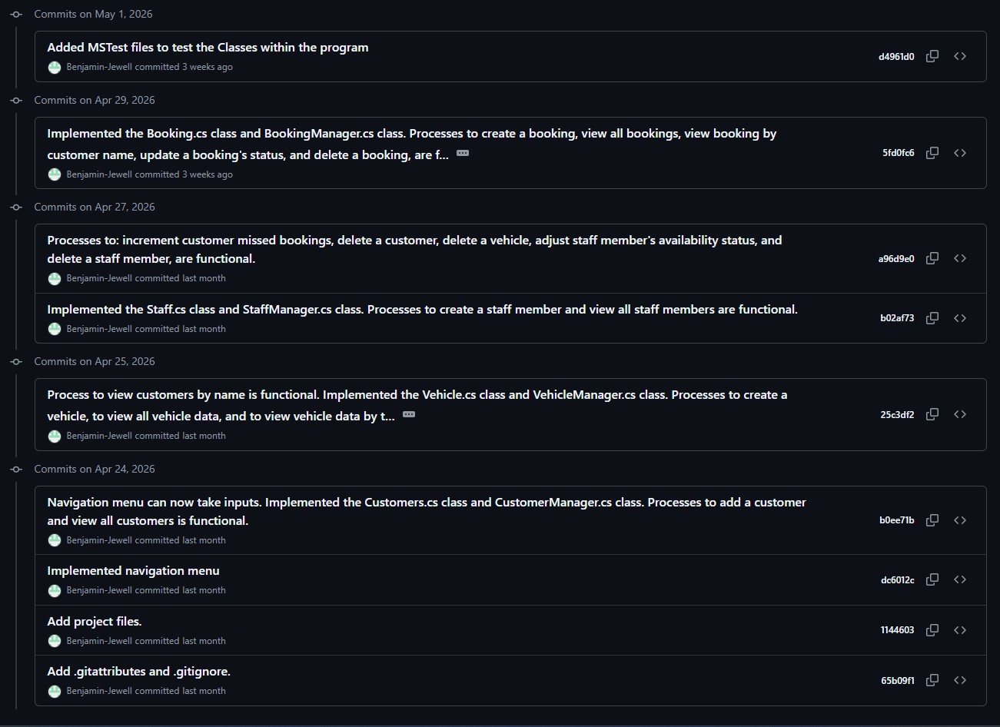
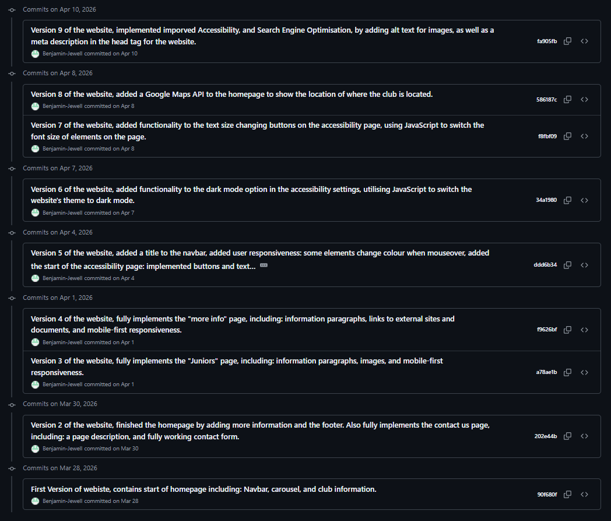

Throughout the first year of the BSc (Hons) Computing and Digital Technologies course, there have been examples of work in the modules that required some form of version control using GitHub. The following page is a description and highlight of each of the examples of work that have a GitHub repository.
This assignment required me to produce a single, large, object orientated programming solution for a test drive booking system. I had to design, test, and deploy a software artefact which would allow the hypothetical staff members to manage and oversee the car test drives the customers have booked.
Link to the GitHub Repoistory of this assignment: https://github.com/Benjamin-Jewell/SCDV41_CW2_Project

This assignment required me to design and develop a front-end prototype solution for the same existing website as the first assignment.
Link to the GitHub Repoistory of this assignment: https://github.com/Benjamin-Jewell/Unicorn-Badminton-Club-Website

This assignment required me to produce a digital portfolio to demonstrate my professional capabilities and achievements. I created a website which contains a Digital CV, information about Module Progression, a Professional Development Journal, and information about GitHub Repositories created for work throughout the modules.
Link to the GitHub Repository for this assignment: https://github.com/Benjamin-Jewell/Digital-Portfolio-Website